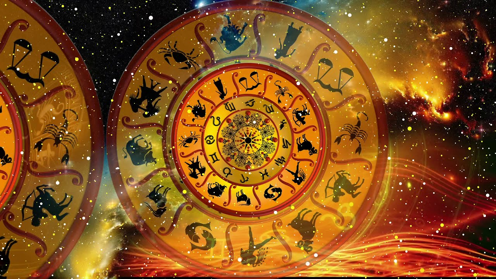

Some quick example text to build on the card title and make up the bulk of the card's content.
ChickhereSome quick example text to build on the card title and make up the bulk of the card's content.
Clickhere.jpg)
Some quick example text to build on the card title and make up the bulk of the card's content.
Clickhere
Some quick example text to build on the card title and make up the bulk of the card's content.
ClickhereAstrology is a predictive science with its own sets of methods, claims and findings that have forever inspired and allowed people with insights into different aspects of their life. Astrology, with its wows and hows, is contentful and approving enough to make people a believer of the same. And thankfully, it continues to do so despite the world shifting bases from what they believe in and what they don’t.
If one has to go into the technicalities of astrology, it is the study of different cosmic objects, which are usually stars and planets, that have an effect on the lives of the people. You must be aware that there are as many as 8 planets in the solar system. However, If I ask an online astrologer near me about the planets in astrology, they will tell me that there are as many as 9 planets in astrology also called Navagrahas. And surprisingly, the planet Earth, in astrology, is not counted among the nine planets.
A huge chunk of credit for what we are today goes to the force of online astrologers we have got on board. Astrologers come from different walks of life and only the best, who has a piece of extensive knowledge in their field, make it to this platform for your convenience. As the Astrologers work with us, they are scrutinized in the form of ratings that the customers give them. The better the rating, the better the service. Talking about service, there are multiple ways to avail the same. Either you can talk to the astrologer over a call or simply chat with them at your convenience. And guess what, the first chat with an astrologer can be availed at a 50% discount.
Why Is Astrology So Accurate? First of all, the credit for astrology and the predictions we make here being so accurate goes to the 100s of learned and astrologically-versed astrologers we have on board. And to answer what makes astrology so accurate, then it is the pure knowledge of our astrologers about the planets, planetary configurations, constellations and learning of how they influence human life and behaviour as they move, shift or even stay still. Astrology is not some random guesswork but science that entails scientific principles that were sketched by learned Gurus 1000s of years ago and have not changed to date. These gurus studied the movement of planets and how their aura influences the life of people on earth. The antiquity of astrology is revealed from the fact that millions of people continue to stay connected with it due to the accuracy it has to offer. Astrology has changed the lives of millions of people through us and many other astrologers who continue to share their knowledge of astrology one prediction at a time.
Many people have misconceptions that an astrologer can tell them what exactly is going to happen with them in the future or next moment, which is a wrong way to think about astrology. Astrology predictions are based on planetary movements. A planet moves from one house to another, one zodiac sign to another, etc. These moments by plantes can either be good or unfavourable for the native. For example, if say the planet Mercury is camping in a friendly zodiac sign, the outcomes are to be good for the native. Meanwhile, if the mercury is camping in an unfriendly zodiac sign, the outcome can be critical. An astrologer, based on calculations, notes down such shifts and traits and based on the same share with you if your upcoming time would be good or tough. If you think this way, astrology predictions ought to be true. Accurate predictions are possible when you seek to know about things like upcoming shubh muhurats, whether you are manglik or not?, etc.